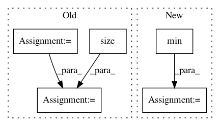

5ffa38fca42bb3fbee030f4b80264e0f4910a49c,torch_geometric/datasets/utils/tu_format.py,,read_adj,#Any#Any#,15
Before Change
def read_adj(dir, prefix):
index = read_file(dir, prefix, "A")
index = index.t().long() - 1
new_index = index.new(index.size()).copy_(index)
indicator = read_file(dir, prefix, "graph_indicator").long() - 1
bincount = torch.from_numpy(np.bincount(indicator.numpy()))
index_slice = index.new(bincount.size(0) + 1)
index_slice[0] = 0
curr_graph = indicator[0]
for i in range(index.size(1)):
row = index[0, i]
if indicator[row] > curr_graph:
new_index[:, i:] -= bincount[curr_graph]
curr_graph += 1
index_slice[curr_graph] = i
index_slice[-1] = index.size(1)
index = new_index
After Change
index[:, index_slice[curr_graph]:i] -= index[:, index_slice[curr_graph]:i].min()
curr_graph += 1
index_slice[curr_graph] = i
index[:, index_slice[curr_graph]:] -= index[:, index_slice[curr_graph]:].min()
return index, index_slice
def read_slice(dir, prefix):
In pattern: SUPERPATTERN
Frequency: 3
Non-data size: 5
Instances
Project Name: rusty1s/pytorch_geometric
Commit Name: 5ffa38fca42bb3fbee030f4b80264e0f4910a49c
Time: 2018-01-16
Author: matthias.fey@tu-dortmund.de
File Name: torch_geometric/datasets/utils/tu_format.py
Class Name:
Method Name: read_adj
Project Name: open-mmlab/mmdetection
Commit Name: a6236b789b8f4e2e66c8379199f40ecef9afce06
Time: 2020-04-21
Author: 40779233+ZwwWayne@users.noreply.github.com
File Name: mmdet/core/anchor/anchor_generator.py
Class Name: AnchorGenerator
Method Name: valid_flags
Project Name: maciejkula/spotlight
Commit Name: 70e4d7fe60a9658bb27b9f5fb67592a1222b2ec3
Time: 2017-07-06
Author: maciej.kula@gmail.com
File Name: spotlight/sequence/representations.py
Class Name: CNNNet
Method Name: user_representation